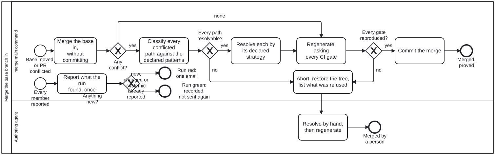

Generated from
cat-harness/processes/sdlc/merge-base.bpmnbygen-processes-viz.ts— do not edit here. All processes
Process_MergeBase · strict · 8 step(s)
Bring the base branch into a pull-request branch: merge, classify every conflicted path before resolving any, refuse the whole merge if one is authored or undeclared, otherwise resolve, regenerate and prove the result with the gate set. CALLED FROM Task_PrepareMerge in code-change-review.bpmn, and executed by bun run cat merge:main (cat-harness-tools/scripts/merge-base.ts). Bean y7b3, issue #1707. Owner, 2026-10-01: “put in merge process bpmn”.
MEASURED 2026-09-30 over 300 main-into-branch merges: 235 conflicted, 147 (63%) ONLY on generated files, each resolved the same mechanical way. The declared patterns, and why each is or is not automatic, are in the merge-conflict-patterns skill.
ALL OR NOTHING: every conflicted path is classified before any is touched, and one refusal aborts the merge and restores the tree. PROVED, NOT ASSUMED: regen derives every check/writer pair from the CI workflow, and an unrepaired check aborts too. Only what both gateways pass is committed.

| lane | role | what it does here |
|---|---|---|
| merge:main command | build-pipeline |
Mechanical. Decides nothing a declaration has not decided: a path no pattern names is refused, and the gate set, not this lane, judges the result. |
| Authoring agent | authoring-agent |
Reached only when the command refused: an authored conflict, an undeclared path, or a resolution the gates could not reproduce. The refused paths are listed for it; what to do with an authored conflict is judgement. |
2 of 8 step(s) carry no documentation — activity-documented lists them.
| step | lane | skill / sub-process | what it does |
|---|---|---|---|
Merge the base in, without committingTask_Merge |
merge:main command | prepare-merge |
git merge --no-ff --no-commit origin/main on a clean tree (untracked files refuse too, so the final stage cannot sweep in a scratch file). |
Classify every conflicted path against the declared patternsTask_Classify |
merge:main command | merge-conflict-patterns |
The first matching pattern decides: take-base, generated-regions, qa-sidecar, or refuse. A path no pattern names refuses. |
Resolve each by its declared strategyTask_Resolve |
merge:main command | merge-conflict-patterns |
qa-sidecar paths first, through qa:resolve-conflicts; take-base paths take the base’s copy; generated-regions files take the base’s side of each hunk, which lies inside a generated region by construction. |
Regenerate, asking every CI gateTask_Regen |
merge:main command | prepare-merge |
bun run cat regen: every check/writer pair the CI workflow runs, repeated until the tree settles. |
Commit the mergeTask_Commit |
merge:main command | continual-progress |
— |
Abort, restore the tree, list what was refusedTask_Abort |
merge:main command | merge-conflict-patterns |
git merge --abort. Each refused path is listed with its pattern’s reason, or “no declared pattern”. |
Resolve by hand, then regenerateTask_ByHand |
Authoring agent | prepare-merge |
— |
Report what the run found, onceTask_Report |
merge:main command | ci-health |
Every member’s verdict, in one table in the run’s summary: merged, already up to date, refused, an expected race, a repeat of a failure already reported, something new, or a member that could not say. cat-harness-tools/scripts/merge-main-comment.ts --aggregate. |
Every one of the 4 decision(s) is documented.
| decision | what decides it | branches |
|---|---|---|
Any conflict?GW_Conflicts |
none still regenerates: a CLEAN merge can produce an artefact neither side would emit (bean lxpq), so only the gates can say it is right. |
none → Regenerate, asking every CI gate yes → Classify every conflicted path against the declared patterns |
Every path resolvable?GW_AllDeclared |
no if even one path is refused: the merge is aborted whole, never half-resolved. |
yes → Resolve each by its declared strategy no → Abort, restore the tree, list what was refused |
Every gate reproduced?GW_Proved |
no when regen reports an unrepaired check, or one with no writer: a resolution the gates cannot reproduce is not a resolution. |
yes → Commit the merge no → Abort, restore the tree, list what was refused |
Anything new?GW_News |
new on three conditions and no others: a failure whose signature the PR’s own comment did not already report; a member that reported no verdict, or one it could not classify; and a systemic failure (every selected PR failed) unless every one of those failures is itself a repeat, in which case each PR’s comment already reports its own condition and the run that made it true was the loud one. A repeat of an identical failure on an unchanged head is already reported. |
new, changed or systemic → Run red: one email already reported → Run green: recorded, not sent again |